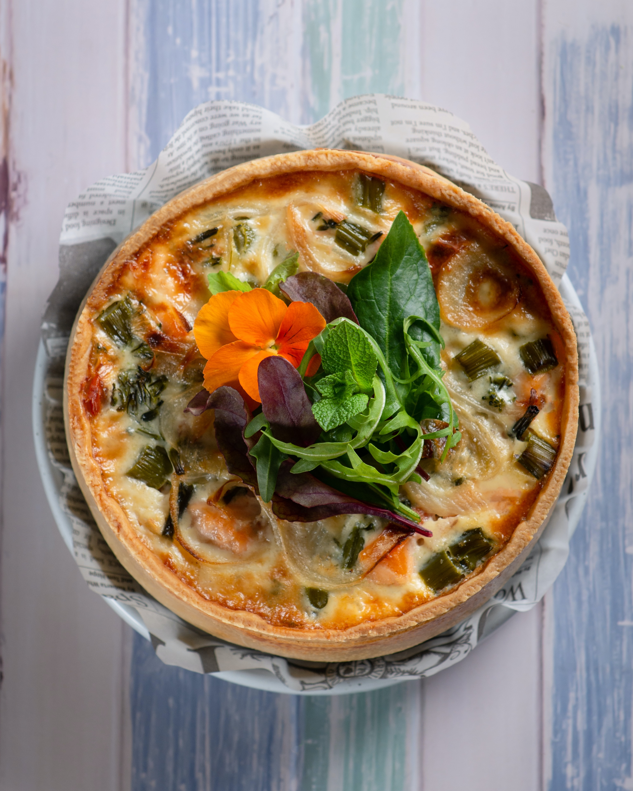

Shepherd's Pie

Description
A classic comfort food favourite, this shepherd's pie sees succulent lamb mince and veg topped with a fluffy layer of mashed potato
Ingredients
- 1 onion, diced
- 2 carrots, grated
- 4 cloves garlic, minced
- 24 oz. lamb (or ground beef if you want to make it a cottage pie)
- Salt and pepper to taste
- 1 small tin of tomato paste
- 1 tbsp Worcestershire sauce
- 1 tbsp red wine vinegar
- A pinch of thyme
- A pinch of rosemary
- 1 cup of vegatable broth (or you can use beef broth or chicken broth)
- 1 cup of peas
- 1 cup of corn